~17 Creating a Bouncing Slime~
5/4/2026
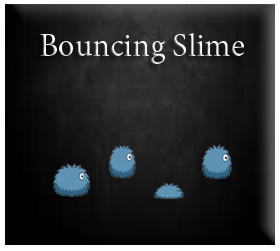
In this tutorial, we want to create a smaller bouncing slime. This way we can use it inside of the dungeon, and it will look more as if it really belongs there. We wanted our fight room slime to be a bit bigger, so that our opponents would be able to take center stage, but our dungeon maze is constrained to size limitations, and so different sizes for the enemy, in these two separate areas, will work out a whole lot better.
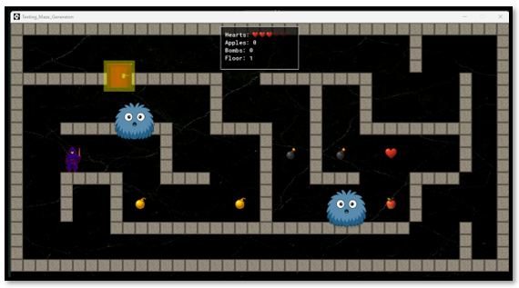So, we will look at shrinking him down to a size of 64px X 64px.
Creating our Folders
Inside the slime folder, create another folder named something like Dungeon Bounce.
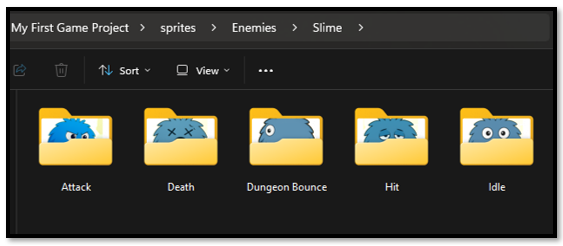Inside this Dungeon Bounce folder, create another 4 folders, for each direction that the enemy will travel inside of the maze.
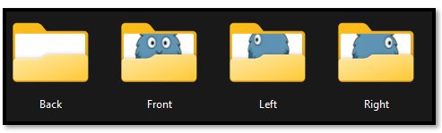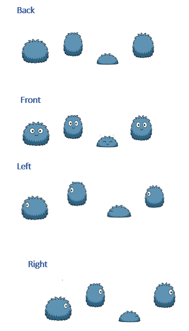 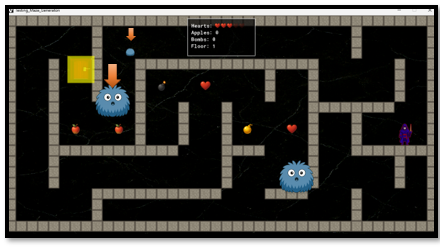
Code Preperations
Naming used:
Sprites
- spr_blue_bouncing_slime_up
- spr_blue_bouncing_slime_down
- spr_blue_bouncing_slime_left
- spr_blue_bouncing_slime_right
Object
- obj_blue_bouncing_directional_slime
Script
- spawn_maze_slimes
- Add to: scr_regenerate_maze
Object Controller Create Event
Open the Object Controller,
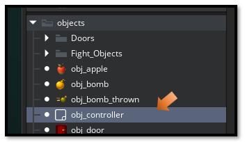After writing, and implementing the following 4 code files, your little bouncing critter should look more like this in the maze, traveling the hallways, bouncing along and lunging at your hero, whenever this little blue guy might see him.
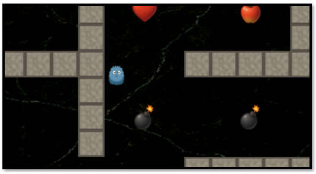
Write this Code inside of the Create Event.
Click file below to see code.
//~~~~~~~~~~ CONTROLLER OBJECT CREATE EVENT ~~~~~~~~~~~~~~~~~~~~~~~~
Script - Regenerate Maze Function
Open this script, that you should already have, inside of your Scripts folder in the Asset Browser.
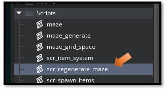
You will need to add onto this script. Remember, a script will not have any events associated with it, you merely open the Script file and write your code.
Click file below to see code.
// ~~~~~~~~~~~~~~ REGENERATE MAZE FUNCTION ~~~~~~~~~~~~~~
A Script to spawn the Slimes in the Maze
Now this second script that we are going to write, is going to be a brand-new script; and it will be used to automatically create the slimes in the maze. This will prevent these slimes from just popping up in weird places, like on top of the walls. Since our maze is self – generating, we have no idea where the walls will show up, so it just make sense to let the system take over and automatically delegate the placement of these critters.
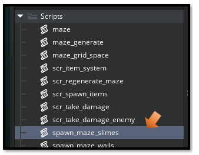
Click file below to see code.
// ~~~~~~~~~ SPAWN MAZE SLIMES - Standalone Script ~~~~~~~~~~~~~~~~~~
The Blue Slime Object
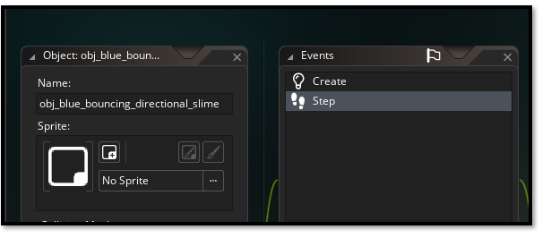
Your blue slime object will have these 2 events associated with it.
- The Create Event
- The Step Event
Click file below to see code.
// ~ obj_blue_bouncing_directional_slime – CREATE & STEP Event ~~~~~
Hero Object
Open up the Hero object, we need to make some changes to the collision event with the hero.
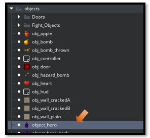
//~~~~~~~~~~~~~~~~~~~~~~~~~ Hero Object -STEP Event ~~~~~~~~~~~~~
How to Control the slime generation
I added one slime per floor in the controller create event and in maze regeneration:
obj_controller
Regenerate Maze Function
If you want more than 1 slime per floor, just change slimes_to_spawn in those two files.
obj_controller
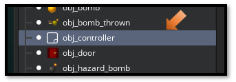Scroll down in the code to find section 3.5 in the Create code, and just change that number here.
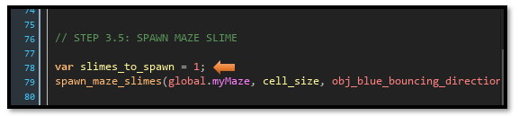Now go to the script section of the code, and find scr_regenerate_maze.
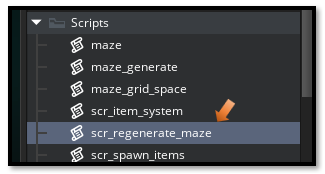Remember, this is just a single file, we are not needing to deal with any events. Just open the script file.
Now scroll down in the Script file, and find this section and change the number of slimes you want in your dungeon.
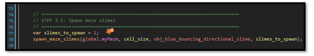
If you want those little blue furry dungeon slimes to be either, smaller or larger, adjust image_xscale and image_yscale in the Create Event.
Open back up that file that we created earlier for the blue furry slime. This time (IF YOU WANT TO MAKE CHANGES) you can change the size of this critter, by going herel
// ~ obj_blue_bouncing_directional_slime – CREATE
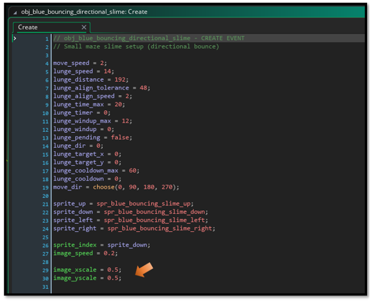
Well, that is just about all we need to know right now about creating some blue furry slimes for your dungeon. You should now know enough to create an enemy. Just remember, the main enemy will be the same. You will just be adding different behaviors in the code. This will be done to enable different reactions from each of the characters, when they come in contact with our hero.